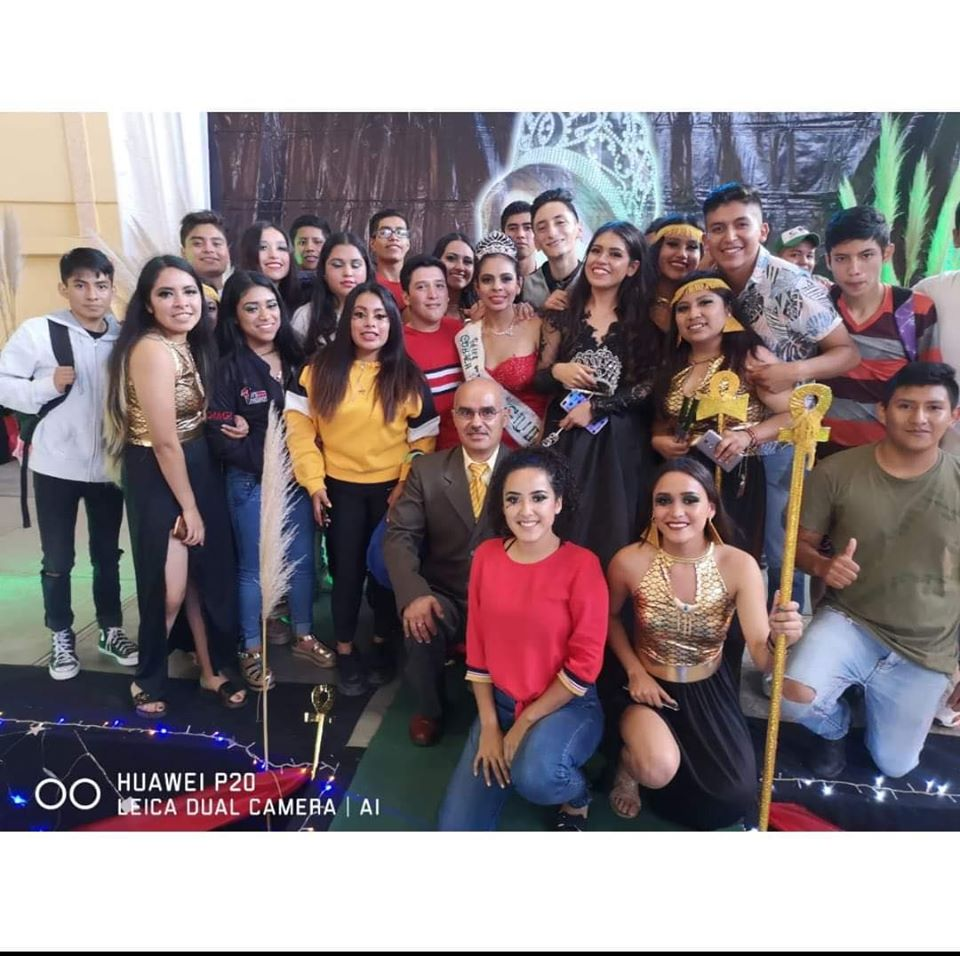

Durante todo este tiempo aprendimos muchas cosas, a valorar los 8. Descubrimos que es dificil escoger una carrera pero es mas saber que queremos hacer de nuestras vidas. Pero eso ya no importa, todo eso son cosas del pasado. Después de esto ya no habrá nada más, será la última vez que veamos a algunas personas que ahora están a nuestro alrededor. Miles de personas han pasado por aqui, y cada una de ellas se ha llevado y ha dejado algo, nosotros nos llevamos conocimientos, decisiones, amigos; pero dejamos nuestros recuerdos, todo lo que vivimos en nuestras aulas y pasillos, corajes, desesperaciones, diversión, risas; dejamos amigos, compañeros, maestros, todos aquellos que nos ayudaron a vivir esta etapa, y que se vuelven tan definitivos para nuestra vida. Conocimos a todo tipo de personas, con algunos pasamos el tiempo y con otros no, hubo compañeros, que tal vez nunca les hablábamos, y que tal vez quisiéramos haber conocido mejor; también hay amigos de toda la vida, esos que estuvieron con nosotros cuando entramos y siguen con nosotros ahora que salimosMucha gente dice que los mejores años de su vida son la preparatoria y ahora entiendo porque; hicimos amigos y vivimos muchas cosas, tomamos decisiones que serán importantes en nuestro futuro. No hay que olvidar lo que sucedió aquí, hay que tratar de guardar las cosas buenas que nos pasaron en las aulas. Compañeros, no sé que mas decir, solo, felicidades, si no los vuelvo a ver recuerden que la vida es como una caja de bombones, nunca sabes que te va a tocar. Les deseo suerte, fue un placer haber vivido esto con ustedes, y recuerden que esto no es una despedida, es un hasta luego.
Si, a ustedes compañeros, que hicieron mi existir agradable, lograron ser mas que unos montoneros; eran como yo, buscando lo inalcanzable.
Si, a ustedes colegiados, que nos asusto mas la pena, que la nota; teníamos todos los sentidos atrofiados, pero por disfrutar el tiempo gota a gota.
Si, a ustedes fraternidad, eramos de las clases los mendigos, pidiendo el saber y nunca eternidad y obtuvimos sin querer a los buenos amigos.